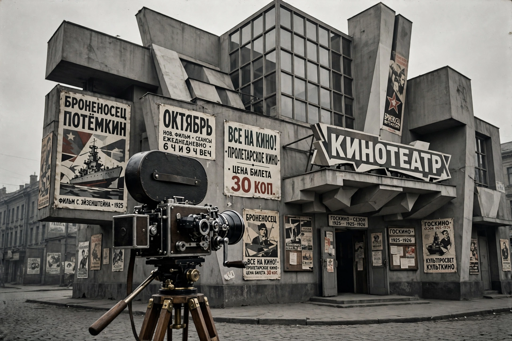

Goskino
| Goskino | |
|---|---|
 | |
| Native name | Госкино (Государственный комитет по кинематографии) |
| Founded | 1922 (as the State Photo-Cinema Enterprise); reorganized several times |
| Headquarters | Moscow, Soviet Union |
| Industry | Film production, distribution and exhibition |
| Successor | Soyuzkino (1930); later the USSR State Committee for Cinematography |
Goskino (Russian: Госкино, short for Gosudarstvenny komitet po kinematografii, "State Committee for Cinematography") was the central state body of the Soviet Union responsible for film production, distribution and censorship. Created in 1922 out of the photo-cinema department of the People's Commissariat of Education, it administered the nationalized Soviet film industry during the period when the Soviet montage school — Lev Kuleshov, Sergei Eisenstein, Vsevolod Pudovkin and Alexander Dovzhenko — produced its classic works.
History
The Russian film industry was nationalized by decree in August 1919. In December 1922 the All-Russian Photo-Cinema Department (VFKO) was reorganized as Goskino, which held a monopoly over film distribution in the Russian republic and supervised production enterprises such as Mezhrabpom-Rus and the studios in Moscow and Leningrad. Parallel organizations existed in the other Soviet republics, notably VUFKU in Ukraine, where Dovzhenko made his major films.
Goskino struggled financially through the 1920s: it depended on profits from imported foreign entertainment films to subsidize domestic production, and it quarrelled with directors over budgets and scripts. Nevertheless, under its umbrella appeared Battleship Potemkin (1925), Mother (1926) and Earth (1930).
Reorganization
In 1930 Goskino was replaced by Soyuzkino, an all-Union organization headed by Boris Shumyatsky, which tightened central control and, with the adoption of socialist realism as official doctrine in 1934, ended the relative experimental freedom of the montage era. The name "Goskino" was revived in later decades for the USSR State Committee for Cinematography, which oversaw the Soviet studio system (Mosfilm, Lenfilm, Gorky Film Studio and others) until the end of the Soviet Union. In post-Soviet Russia its functions passed to successor state cinema agencies.